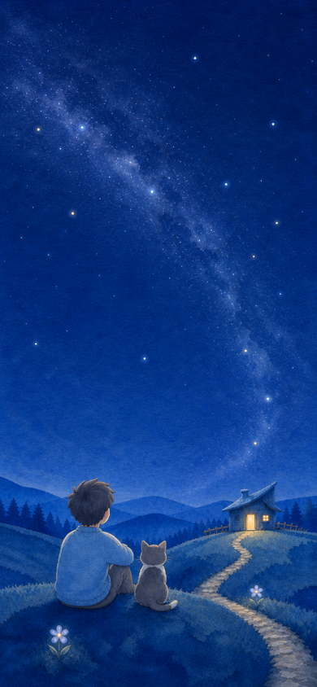
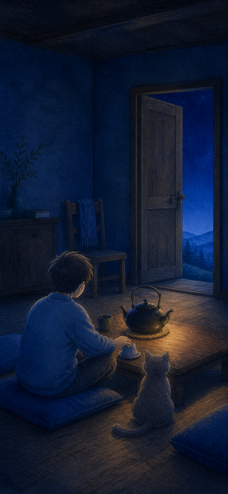

方案 A
负责人推荐
窗边小桌

视线顺序稳定为“窗外冷夜 → 人物与猫 → 壶边暖光”，进屋后明显更安定，又没有与户外断开。
- 优点
- 核心互动最清楚；360/390/430 更容易保持构图；减动版不依赖镜头。
- 签名元素
- 原创木臂纸罩灯，只投下一块可以带到壶边的暖光；它不是角色。
- 风险
- 窗外星河需要再降一级，避免和水壶争焦；纸罩灯不可照搬知名灯具。
本板只比较室内空间、门转场和 UI 承载方式。户外 V7、成年人＋普通家猫、 B-lite 风链、已批准风声全部保持不变。

00 / 不变项
01 / 室内构图 A–B
两张图均为 imagegen 光色／构图探索，不是生产资产，人物、猫、物件与文字仍需原创分层重绘。
视线顺序稳定为“窗外冷夜 → 人物与猫 → 壶边暖光”，进屋后明显更安定，又没有与户外断开。

门外仍留一小段夜色，户外到室内不突兀；风像在门口停住，再把注意力交给水壶。
02 / 推荐 A 的四张关键屏
所有控件都在 SafeArea 内，触控热区至少 44×44；正式 Cocos 版使用 Sprite、Label、Prefab，不沿用旧 Graphics 壳。
今晚，想待多久？
不倒数，随时可以走。像一张临时放下的染纸木牌，不做全屏弹窗；默认 5 分钟，但必须由用户确认。
把这点光，带到壶边。
前 10 秒没有文字；之后只出现一句。暖光可拖，也可“先点暖光、再点水壶”。
水热了。
你也先缓一会儿。
房间只降亮 4%，不用大卡片遮住角色；用户可以继续坐着，也可以主动结束。
外部分享图按 500×400 制作；这里只是应用内预览，最终户外图仍需正式原创重绘。
03 / 门转场与小剧场
04 / 建议一起批准的决策包
这些选择现在都只是提案。你批准后才会记录版本与哈希，并分发给 UI、Cocos 和 QA。
最容易保持安静层级，也是负责人推荐。
零操作前 20 秒仍无 UI；用户一旦触碰，左上安全区出现稳定小圆点，否则 20 秒后出现，避开微信右上胶囊。
先保留音乐、环境声、触碰反馈、减动和大字；避免与手机亮度及暗部验收互相干扰。
显示“我们停在这里了。”，由用户选择继续或结束今晚；声音不越权自动恢复。
延续户外夜空，不再新增一个抢焦的满月。
功能字用黑体；两句叙事用宋体。只裁入实际字符并登记 SIL OFL 许可。